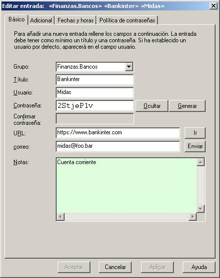

Nombres de usuario, contraseñas y grupos junto con los parámetros adicionales se gestionan en 4 pestañas:
En esta pestaña se combinan los elementos más importantes.

Creando una nueva entrada de usuario y contraseña
- Abra la base de datos donde desea colocar la nueva entrada
- Desde el menú Editar, selecciona Añadir entrada
- Introduce la información necesaria en los campos del diálogo Editar/Ver entrada
Nota: Si un nombre de grupo es seleccionado y luego añade una nueva entrada,
a entrada tendrá ese nombre Grupo precargada en el diálogo Editar/Ver entrada.
Si se agrega un nuevo nombre de grupo al campo grupo, el grupo se creará.
Generando y editando contraseñas
Si lo desea, puede introducir su propia contraseña en el campo contraseña manualmente,
o puedes hacer que Password Safe genere una nueva basada en la política de contraseñas actual.
Para hacer que Password Safe genere una contraseña, pulsa en
Generar en el diálogo Editar/Ver entrada. Si no te gusta el resultado,
puedes volver a pulsar Generar de nuevo, o editar la contraseña manualmente.
Notas:
- Si estás usando un sistema que te permite compartir la misma contraseña en distintas
maquinas/servidores/aplicaciones, etc. puedes configurar las entradas de Password Safe
en consecuencia, de manera que cambiar una contraseña afecte a todas las otras entradas relacionadas.
Esto se conoce como "alias" de entradas y se explica en detalle aquí.
Editando entradas existentes
- Selecciona la entrada a editar en la lista
- Selecciona Editar/ver entrada desde el menú Editar
Nota: Por defecto, las contraseñas se ocultan. Para ver la
contraseña asociada a la entrada pulsa en Mostrar.
Añadir un nuevo grupo
- Selecciona Añadir grupo desde el menú Editar
- Introduce el nombre del grupo
Editar el nombre de un grupo
- Haz clic derecho en el grupo y selecciona Renombrar grupo
de la lista desplegable
Nota: Los nombres de grupos pueden "anidarse", colocando un nombre de grupo dentro de/bajo otro nombre de grupo.